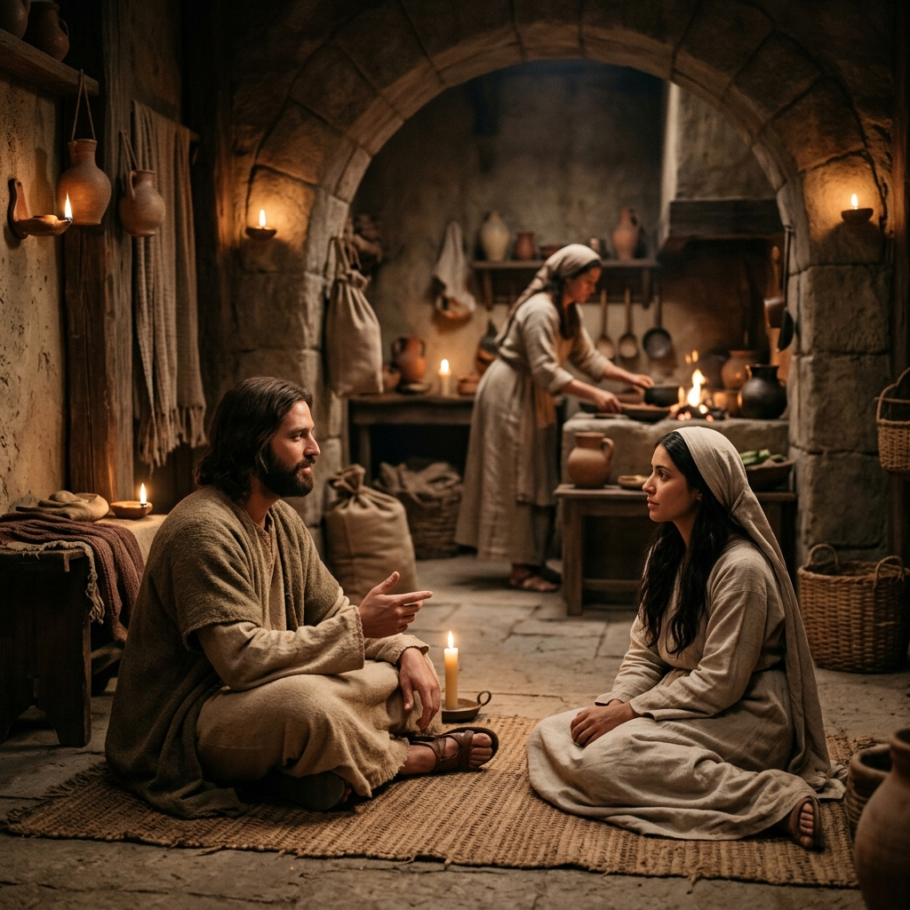
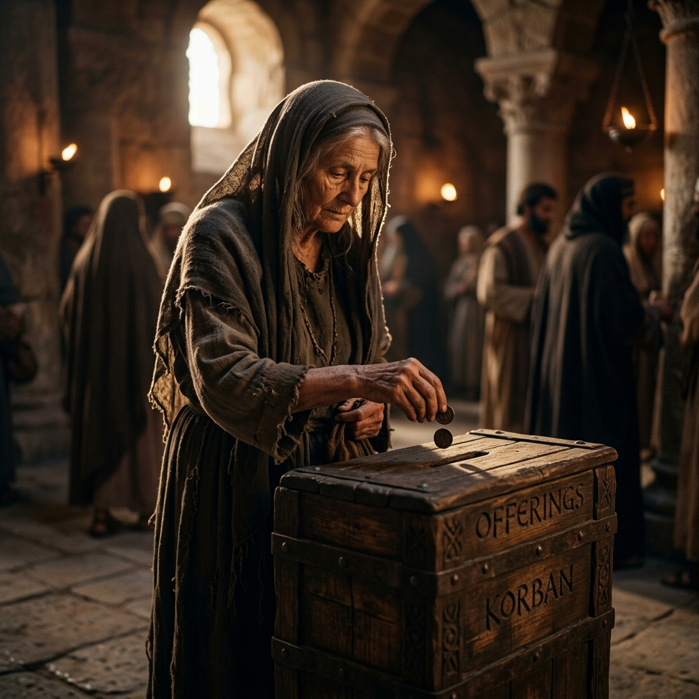

EL MAYORDOMO FIEL
¿De quién es realmente lo que tienes?
Pues todo es tuyo, y de lo recibido de tu mano te damos.
1 CRÓNICAS 29:14
¿DE QUIÉN ES REALMENTE
LO QUE TIENES?
Tiempo · Talentos · Dinero · Oportunidades
De Jehová es la tierra y su plenitud; el mundo, y los que en él habitan.
SALMOS 24:1
¿QUÉ ES UN MAYORDOMO?
Téngannos los hombres por servidores de Cristo, y administradores de los misterios de Dios.
1 CORINTIOS 4:1
TODO PERTENECE A DIOS
De Jehová es la tierra y su plenitud; el mundo, y los que en él habitan.
SALMOS 24:1
“Mía es la plata, y mío es el oro, dice Jehová de los ejércitos.” (Hageo 2:8)
DIOS ME LO DIO.
¿QUÉ ESTOY HACIENDO CON ELLO?
Toda buena dádiva y todo don perfecto desciende de lo alto...
SANTIAGO 1:17
MI TIEMPO
DIOS ME LO DIO.
Mirad, pues, con diligencia cómo andéis... aprovechando bien el tiempo.
EFESIOS 5:15-16

MARTA Y MARÍA
Marta, Marta, afanada y turbada estás con muchas cosas. Pero sólo una cosa es necesaria; y María ha escogido la buena parte...
LUCAS 10:41-42
¿QUÉ ESTOY PRIORIZANDO?
SI PUDIERAS VER
TU ÚLTIMA SEMANA...
Enséñanos de tal modo a contar nuestros días, que traigamos al corazón sabiduría.
SALMOS 90:12
¿EN QUÉ SE FUE TU TIEMPO?
MIS TALENTOS
DIOS ME LOS DIO.
Cada uno según el don que ha recibido, minístrelo a los otros, como buenos administradores.
1 PEDRO 4:10
LOS TALENTOS
MATEO 25:14-30
NO TODOS RECIBIERON LO MISMO.
PERO TODOS TUVIERON QUE RESPONDER POR LO QUE RECIBIERON.
¿QUÉ TALENTO
ESTÁS ENTERRANDO?
Y tuve miedo, y fui y escondí tu talento en la tierra; aquí tienes lo que es tuyo.
MATEO 25:25
MI DINERO
DIOS ME LO DIO.
Honra a Jehová con tus bienes, y con las primicias de todos tus frutos.
PROVERBIOS 3:9

DOS BLANCAS.
Esta viuda pobre echó más que todos... porque todos han echado de lo que les sobra; pero ésta, de su pobreza echó todo lo que tenía.
MARCOS 12:43-44
POCO EN CANTIDAD.
MUCHO EN ENTREGA.
¿QUÉ DICE MI DINERO
SOBRE MIS PRIORIDADES?
Porque donde esté vuestro tesoro, allí estará también vuestro corazón.
MATEO 6:21
MIS OPORTUNIDADES
DIOS ME LAS DIO.
He aquí, he puesto delante de ti una puerta abierta, la cual nadie puede cerrar.
APOCALIPSIS 3:8
ZAQUEO
LUCAS 19:1-10
QUERÍA VER A JESÚS.
Y corriendo delante, subió a un árbol sicómoro para verle; porque había de pasar por allí.
NO DEJÓ QUE EL OBSTÁCULO LO DETUVIERA.
JESÚS PASÓ POR ALLÍ.
Entonces él descendió a prisa, y le recibió gozoso... He aquí, Señor, la mitad de mis bienes doy a los pobres.
LUCAS 19:6, 8
ZAQUEO APROVECHÓ LA OPORTUNIDAD.
Acuérdate de Jehová tu Dios, porque él te da el poder para hacer las riquezas.
DEUTERONOMIO 8:18
LA PRUEBA
¿CÓMO ESTOY ADMINISTRANDO LO QUE DIOS ME DIO?
Porque es necesario que todos nosotros comparezcamos ante el tribunal de Cristo...
2 CORINTIOS 5:10
El que es fiel en lo muy poco, también en lo más es fiel; y el que en lo muy poco es injusto, también en lo más es injusto.
LUCAS 16:10
FIEL EN LO POCO.
¿O quién le dio a él primero, para que le fuese recompensado? Porque de él, y por él, y para él, son todas las cosas.
ROMANOS 11:35-36
SI DIOS REVISARA HOY
CÓMO ADMINISTRAS LO QUE TE DIO...
Bien, buen siervo y fiel; sobre poco has sido fiel, sobre mucho te pondré; entra en el gozo de tu señor.
MATEO 25:21
¿TE ENCONTRARÍA FIEL?
ESTA SEMANA...
ELIGE UNA ÁREA:
ADMINÍSTRALA MEJOR.
No nos cansemos, pues, de hacer bien; porque a su tiempo segaremos...
GÁLATAS 6:9
Se requiere de los administradores, que cada uno sea hallado fiel.
1 CORINTIOS 4:2